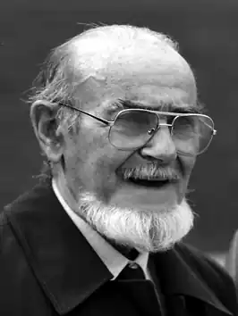

Тібор Секела (хорв. Tibor Sekelj, угор. Székely Tibor, 14 лютого 1912 року, Спішська Собота — 20 вересень 1988, Суботіца) — югославський (хорватський) журналіст, дослідник, письменник і юрист. Брав участь в експедиціях по Південній Америці, Азії та Африці. Поряд з угорським і хорватською мовами він також говорив німецькою, іспанською, англійською, французькою та есперанто. Був членом "Академії есперанто" і почесним членом Всесвітньої асоціації есперанто.
Батько Тібора Секела був ветеринаром і сім'я часто переїжджала. Всього через кілька місяців після народження Тібора вони оселилися в Ценеі (територія сучасної Румунії), а після 1922 року в КІКІНДА (Сербія, Югославія). Там він закінчив початкову школу, після чого сім'я переїхала в Нікшич (Нікшіћ) в Чорногорії, де Тібор закінчив гімназію. Уже в середній школі він захопився альпінізмом і пішки пройшов через всю Чорногорію.
Після цього Секела працював журналістом в Загребі і в 1939 році здійснив подорож до Аргентини для підготовки репортажу про югославських емігрантів, але в підсумку залишився там і протягом 15 років займався журналістикою і дослідженнями. У 1944 році він підкорив Аконкагуа, найвищу гору Західного і Південного півкуль. У 1948-1949 роках займався вивченням малодосліджених районів в реліктових лісах Бразилії. У цій подорожі він зустрів канібальське плем'я тупарі, в якому прожив чотири місяці. Паралельно з дослідженнями, Секела займався археологією і антропологією. У Гватемалі він зайнявся вивченням цивілізації майя) в Мексиці і цивілізації інків в Перу. Спираючись на легенду, він виявив древній світлий місто, побудований менш цивілізованими індіанцями. Під час подорожі по Амазонці, використовуючи раніше отриманий досвід, Секела зумів пройти за Річку Смерті і крізь територію войовничого племені Шавано, зібравши багато корисних географічних відомостей про цей регіон. У 1954 році Секела повернувся до Югославії. Однак він як і раніше багато подорожував. У березні 1962 він відправився в річну подорож по Африці, в ході якого здійснив сходження на Кіліманджаро, найвищий пік Африки. Протягом свого життя Секела займався різними справами. Він був дослідником, письменником, археологом, живописцем, скульптором, режисером, журналістом. Він використовував два десятка мов, з яких на десяти говорив добре. З 1972 року жив в Суботіца (Воєводіна), де до кінця своїх днів працював директором музею. У 1985 році Секела, представляючи Світової асоціації есперанто і делегацію Югославії, вніс на голосування резолюцію про есперанто, яка була одностайно прийнята Генеральною конференцією ЮНЕСКО. Його дружиною була Ержебет Секела.